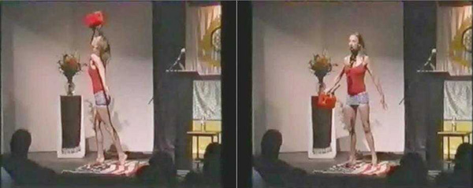

Kristin Prevallet
From the poem to the per[form]ance of “Cruelty and Conquest”
An important characteristic of performance is that it usually doesn’t happen in all-day, ordinary time… And even if it did, it’s time could not be coterminous with everyday-life time, since the framing of an event as performance is in fact a kind of time-bracketing (as Cage called it) that transforms the time-sense (as Stein called it) within it.
Joan Retallack “WRITERS – READERS – PERFORMERS, Partners in Crime,” How (2) 1.6, 2001.
The performance began as a procedure (Oulipo) that refused to stop developing after the steps were followed and the pattern was realized. The procedure:
Cruelty and Conquest: This poem was generated using an Oulipo technique re-introduced by Juliana Spahr in 100 Days: An Anthology edited by Andrea Brady and Keston Sutherland (Barque, 2001). The technique involves counting and eliminating words. Taking a passage from George Bush’s speech to the United Nations, (September 2002, in which he convinced the world to support his war on Iraq, his rhetoric a flimsy screen permeated by lies) I eliminated every seventh word in stanza #2, every sixth word in stanza #3, every fifth word in stanza #2, etc. until the very last stanza in which every other word was eliminated. In the place of the eliminated words, I inserted “oil” until the original passage became completely erased. It’s possible that the final poem does not conform exactly to the constraints I just described: consistency may not be my strong-suit. (Shadow Evidence Intelligence, 26-29).

Kristin Prevallet, “From Cruelty to Conquest”, Naropa University, July 2004.
I am thinking about Karen Finley and Carolee Schneemann. Per[form]ance is the migration of form, beginning in the mind, traversing the page, and finally transubstantiating on the stage where all the phases of the form’s migration are laid bare before an audience, which is at first baffled by the intrusion of a character with no development, a scene with no place, a setting so in the moment of the form’s manifestation that time halts – not in some outer realm of “escape” but in a more inner realm of “presence.” Even if a viewer hates it, the body in performance is arresting. Gaze stops, mind halts. Rivet into disgust, agreement, tears of recognition, horror of abjection, desecration.
Perhaps the gift here is that the audience has seen the performance evolve from still pages into a sound work.
Alison Knowles, “Alison Knowles and The Gift”, Jacket 33, July 2007
The audience is not “the audience.” They (not “it) is complex as a fractal and diverse as an ecosystem. Each body viewing the spectacle is in his or her own head, thinking. That’s a lot of Zen monkeys to tame, a lot of voices chattering. It’s a very volatile pond, filled with all sorts of creatures. And they’re either with you, or against you. But at the pinnacle of the performative moment, their attention is directed, there’s no doubt about that.
I began the reading as I would any other reading: an attractive blonde reads her poems to “the audience.” Serious but cheerful. My gender, my hair, and my ability to either conform or resist the status quo, like a chameleon, in and out whenever I choose -- the broad gestures I make in my confrontation with the world are enabled by the force of my will. This is both power, and problem. But to me, poetic urgency happens when the inner space of revolt meets the external space of form. I call this “sublimation.”
To read the last two stanzas of my poem “Cruelty and Conquest,” I have to choke on the word oil. It’s impossible to say “oil oil oil oil oil” without choking. It’s a hard, ugly, pig-like sound. When the poem came off the page and into my voice it became apparent that I had to gag on the word oil. Before this evening, I had read this poem several times, at different poetry readings.
But was the rhetoric coming through? Was it obvious that my gagging on the word oil was a statement about how we all are gagging on oil, how we ingest it, surround ourselves by it (plastic), feed off of it (gas), slather it all over our bodies (petroleum jelly)? As I gagged on the word oil, the audience cheered and laughed – but this poem wasn’t just making a statement about the connection between oil and the Iraq war. This poem was much more psychological. The ever-evolving form of the OULIPO procedure needed to migrate. Off the page, and onto the suddenly serious, suddenly charged, space of the stage. I moved from the mic and into the bracket.
An attractive blonde takes off her dress and shoes. Is wearing a stars-and-stripes, red-white-and-blue-bathing suit. Unwraps the American flag and places it on the stage. A student brings up a gas can, filled with molasses, and places it on the flag. I take the gas can and move into position: tippy toes, left arm stretched behind me, right arm holding the gas can high in the air, chin up. Holding this pose, I pour the “oil” into my face, gagging on it for 2 minutes until it is gone (a long time). It runs all down my torso and legs, clotting. I’m thinking to myself - this either sucks, or it means something.
And it did both. I suppose it completed the transfiguration of the poet into the black goo and monstrosity she was trying to communicate in her poem. The gluttony of American blonde girls and the blonde ambition to shop, look pretty, conform. I could either do this, or burlesque.
[There are many non sequiturs in my thinking around this piece. It doesn’t quiet all add up. After all, any performance that manifests the mutation of form is as much about the psychology of the performer as it is about the message she is trying to convey. Third person, the distance between the chameleon “I” and the enactment of my chameleon status on the stage in front of 300 people. My attempt to subvert sexuality in the classic feminist stance - a woman gesticulating the staged enactment of fellatio with a gas can. Enactment to subvert the burlesque expectation of a woman on stage taking her clothes off to excite, entice, seduce the gaze. The possibility of pissing off certain men because their expectation for how a female poet should behave has been derailed.
“You’re a spoiled brat,” he said.
“We’re all spoiled brats,” I said.
Feminist mission accomplished.]
But because the audience is not “them” there were diverse reactions. A woman yelled “you go girl!” Another sobbed, permeating the silence of the riveted room. These reactions ignited an energy field, a force that I had to recon with emotionally as I was gagging on the molasses. There was no turning back now! The FORM had taken shape through my body and the poet was no longer present. That was the performative moment. The completion of a gesture.
I was reading that night with Karen Finley. The homage is overt. The sublimation, successful. The message both aesthetic and polemical. Afterwards, two boys folded the oil drenched flag, a military homage. This was an intentional statement of mourning. The flag had been desecrated. By me in gesture. No wars will be stopped by such gestures. By this nation in practice. Dying, dying, dying. The folding of the flag was to me a moment of shared public mourning. I wanted to mourn the desecration of the flag, its symbol being used to perpetuate fraud and killing. How many will die before we pause and reflect on the monstrosity of death when forced into history by an ideological war that began with a fantasy in some rich man’s head and ended in the mutation of a savagery that is now completely out of control?

Kristin Prevallet, “From Cruelty to Conquest”, Naropa University, July 2004.
Kristin Prevallet
October 1, 2007